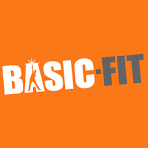
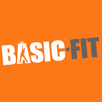

Mijn Profiel
Welkom op mijn portfolio website! Mijn naam is Luuk Meulmeester, ik ben 16 jaar en woon in Goes.
Ik heb in 2024 mijn havo-diploma behaald, met het economie en maatschappij profiel.
Doelen voor dit jaar:60 EC halen en mezelf oriënteren binnen de ICT.
- Fitness
- Gaming
- Schaken
Hobby's:
 
